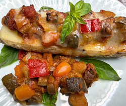

ラタトゥイユとズッキーニのグリル
- 調理時間：50分
- （一人当たり）
- カロリー：303kcal
- たんぱく質：8.0g
- 脂質：20.8g
- 炭水化物：23.0g
- 塩分：1.9g


＜2人分＞
- ズッキーニ
- １本
- ナス
- １本
- ニンジン
- １/２本
- 玉ねぎ
- １個
- パプリカ
- １個
- にんにく
- １片
- ホールトマト缶
- １缶
- オリーブオイル
- 大さじ２
- ローリエ
- １枚
- 塩
- 少々
- コショウ
- 少々
- バルサミコ酢
- 大さじ１
- 溶けるチーズ
- お好みで
- バジル（飾り用）
- 適宜


- ズッキーニは縦半分に切り、半分はボートにするため中をスプーンで浅くくり抜く。くり抜いた後、耐熱容器にいれて電子レンジ600wで2分、加熱する。
残り半分は半月切りにする。 - ナスはヘタをとり、半月切りにする。
玉ねぎはくし切り、パプリカは種を取り除き、乱切り。
ニンジンは小さめの乱切りにする。
ニンニクは芯を取り除き、薄切りにする。 - フライパンにオリーブオイル、にんにくをいれて弱火にかけ、香りが出るまで加熱する。
玉ねぎ、ズッキーニ、ナス、パプリカ、ニンジンを加え、中火でしっかり炒め、塩、コショウを振る。 - ホールトマト缶、ローリエを加え、フタをして弱火で20～30分程度煮こむ。
汁気が足りないようなら、途中で水（分量外）を加えて焦げないようにする。
仕上げに塩、コショウで味をととのえる。
バルサミコ酢を加えて一旦、火にかければ完成。 - ①のズッキーニの上にラタトゥイユをのせて、溶けるチーズをかけて180℃のオーブンで焼く。
お好みでバジルを飾る。
ラタトゥイユとズッキーニのグリル
この時期は、夏の太陽をたっぷり浴びた色鮮やかな野菜がたくさん並びます。そんな旬の野菜を鍋に集めてコトコト煮込むラタトゥィユ。野菜が主役だからこそ、それぞれの甘みやうま味が引き立ちます。鍋ひとつで作れて、冷やしてもおいしいのもうれしいところ。たっぷりつくって冷蔵庫に冷やしておけば「あと一品」に心強い常備菜です。